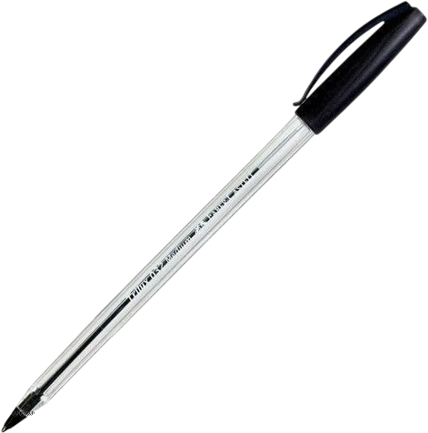

04 — sobre mí
Verónica Vidaurre. . Vivo y trabajo en La Paz, Bolivia.
mueve la lámpara con el mouse y haz clic en los objetos toca los objetos de la mesa

escríbemequién soy
Soy Verónica Vidaurre y firmo mi trabajo como veruzh. Soy productora audiovisual, diseñadora digital y hago motion graphics.
Trabajo con marcas, eventos universitarios y clientes que necesitan contar algo en pocos segundos, sobre todo en redes sociales.
qué hago
- Producción audiovisual: grabación y edición de contenido vertical para TikTok y Reels.
- Motion graphics: logos animados y piezas promocionales para redes y eventos.
- Diseño digital: piezas gráficas, ilustración y portadas, como el rediseño de Balas perdidas.
contacto
bocetos
Antes de ilustrar o animar, dibujo. En el estudio de caso puedes hojear mi bloc de bocetos, del lápiz a la pieza final.
veruzh
Es el nombre con el que firmo mis trabajos. El gato es mi logo: lo vas a ver en la cabecera, en el menú y en la transición entre páginas.
¿poco tiempo?
todo en un vistazo
Bio
Verónica Vidaurre (veruzh). Productora audiovisual, diseñadora digital y motion graphics en La Paz, Bolivia. Hago contenido para redes sociales, logos animados y motion graphics para marcas y eventos.
Servicios
- Producción y edición de video vertical
- Motion graphics y logos animados
- Diseño digital e ilustración